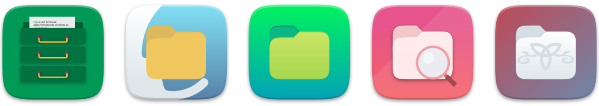
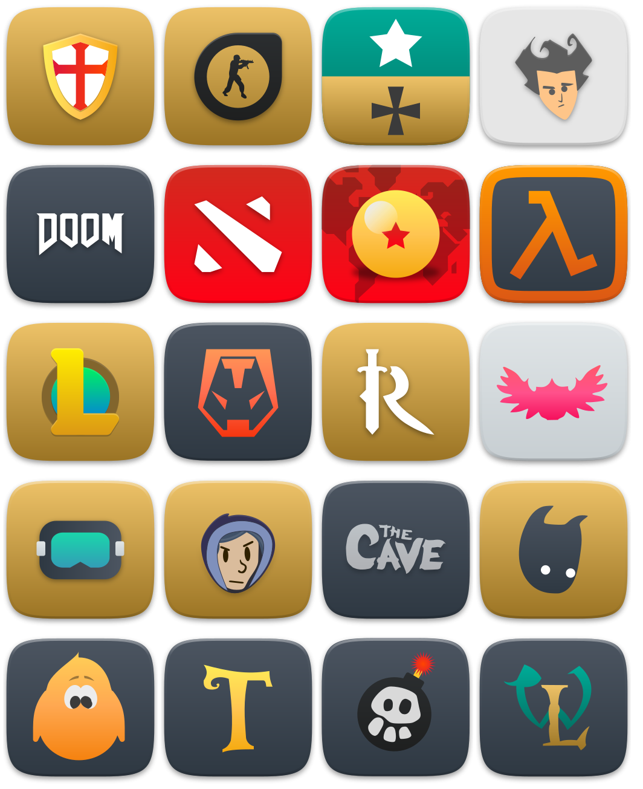

Suru++ 25
v25 or XXV
- I have increased from 2,2k to 4,7k icons!
- All 4,7k icons of the folder
appshave been redesigned; - I have fixed the trash icons in KDE;
- I have fixed the wrong session icons;
- Suru++ has won the new folders with colour of Linux Mint:
- The file managers are no longer same, now are different and modern, and redesigned by Pavel Dimens (@pdimens):
 - Hundreds Steam games icons are supported officially:
 - Some icons have been redesigned by Pedro Gauna (@lapega).
v20 3.0 or XX 3.0
It is one of biggest changes made during one month in this icons theme:
- Fixed by @SmartFinn:
- Deleted the executable bit from files for security issues.
- Fixed icons with rendering issues on old systems.
- Removed some broken symlinks.
- By me:
- Removed all Gravit Designer base64 and metadata which caused rendering bugs.
- Reduced from 175MB to 110MB!
- Vectorised and improved the highlighting border in KDE, you can compare:
Before:

After:
- Improved the ugly colours of some icons as Activity Monitor and Terminal.
- Suru++ conservative and traditional monochromatic icons have been replaced for Papirus colourful and monochromatic icons because they fit very well with Suru++ 20.
- The grey colour of monochromatic icons have been replaced with the new cyberpunkish, elegant andmodern colour based on Papirus:
#5c616c. - New countries flags (in development).
- Designed by @jcuenod:
- Zotero
- Designed by @Pronink:
- Azure Data Studio
- Added icons:
- Bookworm
- Clion
- DataGrip
- Etcher
- FontBase
- Goland
- Howl
- JetBrains Toolbox
- Joplin
- MPS
- Natron
- Neovim
- NextCloud
- Rider
- RubyMine
- SIgnal
- TeXmacs
- TeXstudio
- Unity 3D
- VMWare Viewer
- WebStorm
- Added 58 Flatpak icons:
- Android Studio
- Audacity
- Avidemux
- Blender
- Bookworn
- Corebird
- Darktable
- Discord
- Dolphin EMU
- Elisa
- Emacs
- Filezilla
- Firefox
- Firefox Developer
- Firefox Nightly
- GCompris
- Geogebra
- GIMP
- GNU Cash
- GPodder
- HexChat
- Inkscape
- JDownloader
- Joplin
- KDEConnect
- Kdenlive
- Keepass
- Krita
- LibreOffice
- Mendeley
- Minitube
- MonoDevelop
- Musecore
- MyPaint
- Neovim
- NextCloud
- Octave
- Okular
- OpenShop
- PhotoQT
- Picard
- Pitivi
- Postman
- Pycharm
- Remmina
- Signal
- Spotify
- Steam
- Sublime Text
- SuperTux
- Telegram
- TeXstudio
- Thunderbird
- Transmission
- Tuxpaint
- Viber
- VLC
- VSCode
- Zim
v20.1.3 or XX 1.3
- Fixing the broken symlinks.
- The folders
placesfixed by @SmartFinn:- Remove
-bluesuffix from symbolic icons. - Replace duplicate
places/symbolicicons to symlinks. - Remove
-bluesuffix from 16px icons. - Replace duplicate
places/16icons to symlinks. - Delete color folder icons from
places/scalable(forbuild_color_folders.sh). - Fix several symlinks in
places/scalable. - Add missing symlinks to color folders.
- Remove
- Adding new folders colours.
- Add new three colours of folders — blue grey, custom and teal.
- Adding the new folders 96 and 128 and retina folders.
- Improving the
index.theme. - Correcting the misspelling of an icon to get well displayed.
- Fixing the missed directories
extensions,logandpluginin the fileindex.theme. - Adding 5 missed icons.
- Improving the monochromatic icons of Octopi.